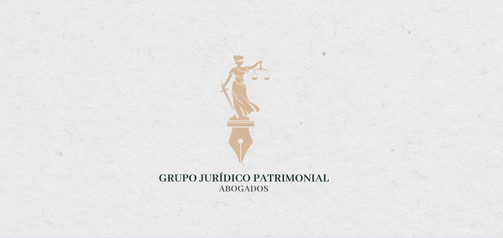

Brindamos asesoría y representación legal en sucesiones testamentarias e intestamentarias, acompañando a las familias desde el inicio hasta la conclusión del proceso. Protegemos los derechos de herederos y legatarios, asegurando claridad, eficiencia y certeza jurídica en cada etapa.

Despacho legal · Zapopan, Jalisco
Certeza jurídica para proteger lo que construiste
Asesoría legal integral en sucesiones, patrimonio, familia e inmuebles — con un enfoque estratégico, preventivo y de largo plazo.
01 · Quiénes somos
¿Quiénes somos?
Grupo Jurídico Patrimonial es una firma legal especializada en la protección, administración y defensa del patrimonio de personas, familias y empresas. Brindamos asesoría jurídica integral con un enfoque estratégico, preventivo y orientado a la generación de soluciones que aporten certeza y seguridad jurídica.
Nuestra práctica se distingue por el compromiso con la excelencia profesional, la ética y la atención personalizada. Analizamos cada asunto de manera integral para identificar riesgos, diseñar estrategias eficientes y representar los intereses de nuestros clientes con el más alto nivel de diligencia y responsabilidad.
Contamos con experiencia en las áreas de derecho patrimonial, sucesorio, inmobiliario, familiar, corporativo y contractual acompañando a nuestros clientes tanto en la prevención de contingencias legales como en la atención de procedimientos judiciales y extrajudiciales.
En Grupo Jurídico Patrimonial entendemos que cada decisión jurídica tiene implicaciones patrimoniales, personales y comerciales. Por ello, ofrecemos asesoría basada en el conocimiento técnico, la transparencia y una comunicación clara, construyendo relaciones de confianza a largo plazo con quienes depositan en nosotros la responsabilidad de proteger sus intereses.
Nuestro objetivo es proporcionar soluciones jurídicas eficaces que permitan a nuestros clientes tomar decisiones con certeza, proteger su patrimonio y alcanzar sus objetivos con seguridad y respaldo legal.
6áreas de práctica
100%atención personalizada
1a1acompañamiento por caso
02 · Servicios
Servicios
Diseñamos estrategias patrimoniales integrales para proteger, organizar y optimizar tu patrimonio de manera eficiente. Nuestro enfoque combina prevención legal y fiscal, ofreciendo soluciones adaptadas a cada situación y enfocadas en preservar tu patrimonio y tu tranquilidad.
Brindamos asesoría y representación legal en divorcios, concubinatos, acreditación de relaciones, convenios y pensiones alimenticias, asegurando claridad, eficiencia y seguridad jurídica en la protección y correcta distribución de los bienes y derechos de cada parte.
Realizamos análisis integral de tu patrimonio inmobiliario para determinar los trámites y acciones necesarias, incluyendo licencias, dictámenes y levantamientos topográficos. Brindamos avalúos catastrales y comerciales, así como servicios de subdivisión, regularización de predios, apertura de cuentas prediales en catastro y folios reales en el Registro Público de la Propiedad. Nuestro objetivo es asegurar la correcta organización y protección de tu patrimonio inmobiliario, combinando precisión, legalidad y eficiencia en cada gestión.
03 · Equipo
Lic. Esmeralda Santoyo Martínez
Fundadora y Directora General
Esmeralda Santoyo Martínez es Fundadora y Directora General de Grupo Jurídico Patrimonial, firma especializada en la asesoría y representación legal de personas, empresas y desarrolladores inmobiliarios, con un enfoque integral en la protección del patrimonio, la seguridad jurídica y la estructuración de proyectos.
Su práctica profesional comprende las áreas de derecho patrimonial, inmobiliario, corporativo, mercantil, contractual, civil, sucesorio, familiar y fiscal, participando en asuntos que requieren un análisis estratégico, una visión preventiva y soluciones jurídicas de alto valor.
Ha asesorado a empresas y desarrolladores en la planeación, estructuración y ejecución de proyectos inmobiliarios, así como en la negociación y elaboración de contratos civiles y mercantiles, constitución y reorganización de sociedades, procesos de regularización de inmuebles, auditoría legal (due diligence), cumplimiento normativo y administración de riesgos legales, brindando acompañamiento integral durante cada etapa de la operación.
En el ámbito contencioso, representa los intereses de sus clientes en litigios civiles, mercantiles, patrimoniales y sucesorios, privilegiando estrategias procesales sólidas orientadas a la protección de activos, la defensa de derechos y la resolución eficiente de controversias.
Su ejercicio profesional se distingue por combinar un sólido conocimiento técnico con una atención personalizada, ética y transparente, construyendo relaciones de confianza con cada cliente y ofreciendo asesoría jurídica que trasciende la resolución de conflictos para convertirse en una herramienta de prevención, crecimiento y desarrollo.
Como Directora General de Grupo Jurídico Patrimonial, lidera una firma comprometida con la excelencia, la innovación y la generación de soluciones jurídicas integrales, acompañando a personas y organizaciones en la toma de decisiones estratégicas con certeza, seguridad jurídica y una visión de largo plazo.
04 · Contacto
Hablemos de tu caso
Escríbenos y con gusto te orientamos sobre tu situación específica.